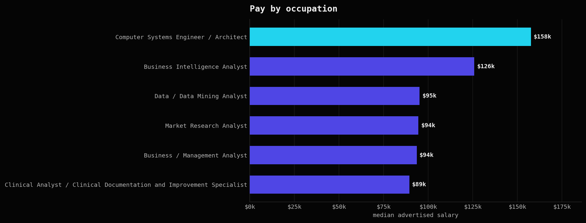
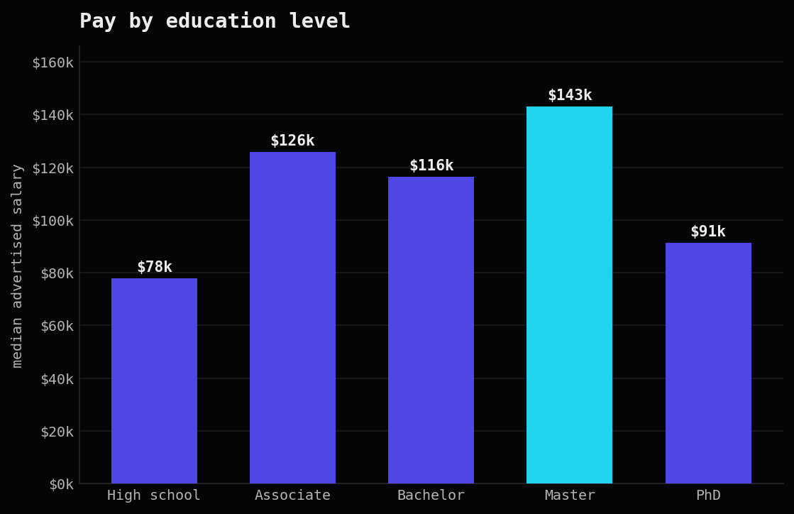
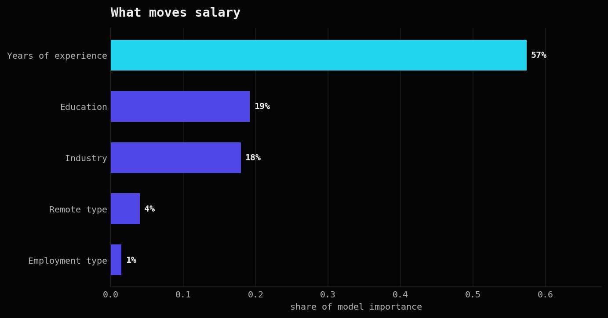
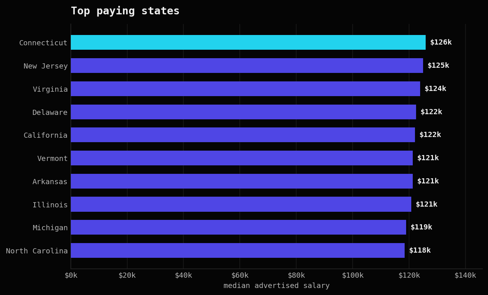

Boston University · AD688 Applied Business Analytics
This site collects the three projects I built for my graduate analytics course at Boston University. All three run on the same large Lightcast job posting data: I clean and chart a 700 MB file in PySpark, model it as a small warehouse in Spark SQL, and train machine learning models to predict pay. It is coursework, but the numbers are real and I kept the hard parts in.

700 MB read and cleaned in Spark
72,498 job postings analyzed
3 models compared on real salaries
57% of pay driven by experience
Course work
These are the three graded projects from my AD688 analytics course, each on the same Lightcast job postings data. Every one shows a different skill, and I kept the heavy work in Spark and only pulled small tables out to draw the charts.

I loaded a 700 MB file in Spark, cleaned the messy salary and education fields, filled the gaps in a careful way, and built charts that explain pay across industry, education and remote work.

Linear, polynomial and random forest models. Spark refused to give me standard errors, so I had to find out why.

I broke one flat file into clean relational tables for companies, industries and locations, then answered four real questions about pay, remote work, and how hiring moves over the year.
A short word
I started in business and marketing in France, then did two internships in e-commerce and social media. Along the way I found that I like the data part the most. Now I study applied business analytics at Boston University and I am teaching myself machine learning on top of the course.
Get in touch
I am looking for a real first experience in machine learning or data. The fastest way to reach me is email.